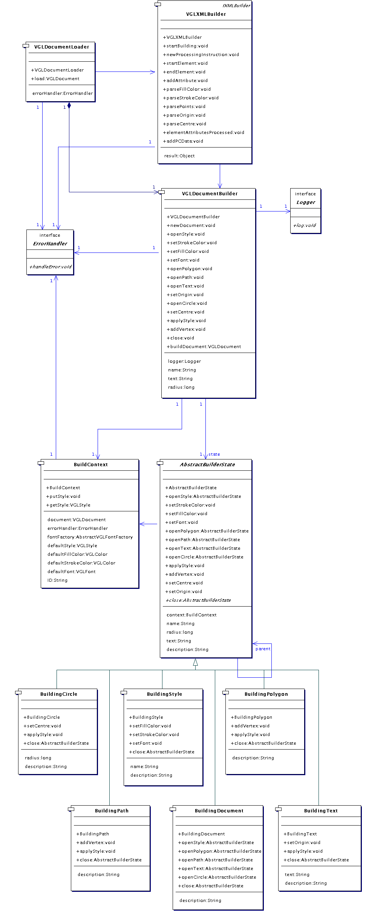
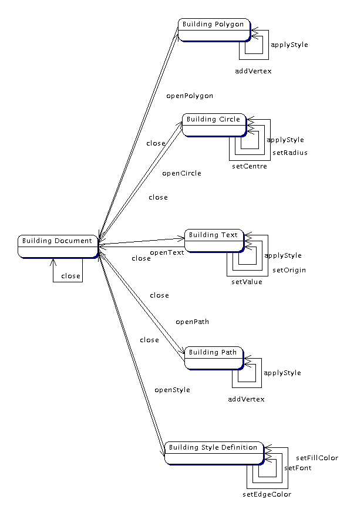

VGLViewer

Implementation
vglDocument.utils |
Introduction|
This package implements two utilities for creating VGL document models: VGLDocumentBuilder, which has a bunch of handy methods for building a VGLDocument, and VGLDocumentLoader, which drives a VGLDocumentBuilder to build a VGLDocument as it parses a VGL XML stream.
|
|
Since this package depends upon package vglDocument, this documentation assumes that you have read the documentation for package vglDocument.
|
|
This document might take a couple of reads to follow; you'll probably have to pick your way through the source code as you go to suppliment my description. You should be familiar with the Builder and State patterns. If not, take a look at a book such as
[GOF] |
VGLDocumentBuilder: a 'Stateful Builder'|
A VGLDocumentBuilder hides the complexity of VGLDocument construction behind a single class API. Since a VGLDocument is a hierarchical data structure, VGLDocumentBuilder operates on a metaphore of nested "opening" and "closing" of document elements; when an element is opened, it's construction begins, then when it's closed, it's construction is finished. If the element is opened inside a parent element, where the parent is still open, the element will be added to it's parent when closed.
|
|
Each document element has a subset of the VGLDocumentBuilder direction methods that apply to it, and a subset that do not. For example, between openPolygon and it's corresponding close direction, addVertex is legal, but setCentre is not. In the event of an such an illegal direction being given, VGLDocumentBuilder will log an error message with a user-supplied ErrorHandler and otherwise ignore the direction.
|
|
VGLDocumentBuilder therefore has a number of internal states, each of which has a certain behaviour. This was a clear invitation to apply the State pattern, as will be described.
|
|
AbstractBuilderState declares an abstract base class common to all states of VGLDocumentBuilder. The states are implemented by
|
- BuildingDocument, in which the document is being built,
- BuildingStyle, in which a VGLStyle style definition is being built,
- BuildingPolygon, in which a VGLPolygon element is being built,
- BuildingPath, in which a VGLPath element is being built,
- BuildingText, in which a VGLText element is being built, and
- BuildingCircle, in which a VGLCircle element is being built.
|
|
A VGLDocumentBuilder maintains in instance of one of these subclasses at any given time to represent the current state during the build process and delegates all directions to it. The subclasses themselves are responsible for returning an instance of the subclass corresponding to the next state after a transition. For example, the openPolygon method of a BuildingDocument will return an instance of a BuildingPolygon. The close method of the BuildingPolygon will return a BuildingDocument to return to it's "parent" state.
|
|
Note that the close method of the BuildingDocument will just return the BuildingDocument.
|
|
Take a look at the state transition diagram below for a clearer picture of VGLDocumentBuilder states.
|
Handling Illegal Builder Directions|
Note the ErrorHandler which is associated with a VGLDocumentBuilder. A user is required to supply a concrete implementation of this to a VGLDocumentBuilder on instantiation, so that the VGLDocumentBuilder can notify it of any illegal directions.
|
|
Any direction method called on AbstractBuilderState results in an error being logged. The subclasses override the direction methods that apply to them, so that an illegal direction, to a method not overridden, will invoke an AbstractBuilderState base method and cause the error to be logged. Note that AbstractBuilderState has a getDescription method which is overidden in each concrete subclass to give a human-readable description of the document element being built by the subclass. When AbstractBuilderState logs an error, it is then able to give informative error messages such as "cannot add a radius to a polygon", where "a polygon" was returned by the current subclass, in this case BuildingPolygon. This is a rather helpful feature if VGLDocumentBuilder's client happens to be a non-validating XML parser.
|
|
Each of the state classes are instantiated with a BuildContext and, with the exception of BuildingDocument, a parent state class. When a close direction is given to a state class, it returns it's parent, or if it is a BuildingDocument, it just returns a reference to itself.
|
Builder Context|
The BuildContext supplies resources that are required during the build process. A single instance of BuildContext is owned by a VGLDocumentBuilder. The BuildContext instance is passed between AbstractBuilderState instances as state transitions occur. For example, when VGLDocumentBuilder is initialised (or reset to start a new VGLDocument), it creates itself an instance of BuildingDocument and gives that the BuildContext. On being given an openPolygon direction, BuildingDocument returns a fresh BuildingPolygon instance with the BuildContext plugged into it. The BuildContext has
|
- the VGLDocument being built,
- a table of VGLStyles defined during the build process, registered and accessed by name,
- a Flyweight default VGLStyle instance, and
- an implementation of AbstractVGLFontFactory, which was supplied to the VGLDocumentBuilder on initialisation,
- an ErrorHandler (user-supplied or default) to log errors.
|
|
When close is called on a state subclass other than BuildingDocument or BuildingStyle, the VGLElement product built by the subclass is inserted into the VGLDocument obtained from the BuildContext. When close is called on a BuildingStyle, the VGLStyle product is registered by name with the BuildContext. When a style is applied to an element with an appropriate subclass's applyStyle method, the style is obtained from the BuildContext to associate with it's VGLElement product.
|

Figure 8. Classes implementing the VGL document builder
Document Builder States

Figure 9. States of the VGL document builder
VGLDocumentLoader|
A VGLDocumentLoader is given a VGLDocumentBuilder on instantiation. A call to its load method will return a VGLDocument,loaded from the VGL XML source at the specified location. Any parse errors that occur will be handled with the ErrorHandler associated with the VGLDocumentBuilder. Here's a code snippet of the load method, which uses the lightweight XML parser implemented in the NanoXML package:
[NANO] |
public VGLDocument load(String url) throws FileNotFoundException, IOException {
try {
IXMLBuilder builder = new VGLXMLBuilder(docBuilder, errorHandler);
IXMLParser parser = XMLParserFactory.createDefaultXMLParser();
IXMLReader reader = StdXMLReader.fileReader(url);
parser.setReader(reader);
parser.setBuilder(builder);
parser.parse();
return docBuilder.buildDocument();
} catch ...
|
|
NanoXMLs IXMLParser parses the VGL XML, and requires a couple of Strategies to help, namely implementations of IXMLBuilder and IXMLReader. The name IXMLBuilder is a bit misleading, because it is really a SAX event handler. VGLXMLBuilder implements an IXMLBuilder, and is given a VGLDocumentBuilder and an ErrorHandler on instantiation. When parsing, the VGLXMLBuilder will translate SAX events into directions for its VGLDocumentBuilder, from which the VGLDocument is got when parsing is complete.
|
|